Dish photo credits
Nimbus Rooftop is a made-up restaurant on a sample menu. The dish photos are illustrative stand-ins from Wikimedia Commons, used under the licences below and resized to thumbnails. They are not photos of this restaurant’s food. Click a title for the original file and full licence.
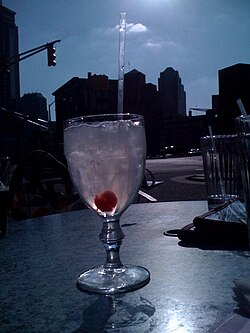
Aam Panna CollinsTom Collins cocktail.jpg by Daniel Nguyen, CC BY 2.0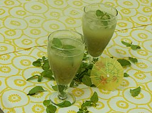
Aam Panna CoolerAam Panna - Summer Cooler.JPG by Zeel Patel, CC BY-SA 4.0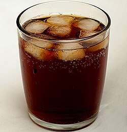
Aerated drinksTumbler of cola with ice (cropped).jpg by Simon Cousins from High Wycombe, England, CC BY 2.0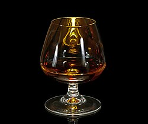
Aged Caribbean rumCognac glass.jpg by Didier Descouens, CC BY-SA 3.0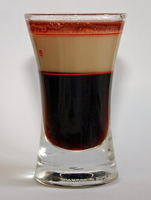
B-52Cocktail b52.jpg by Christian, Public domain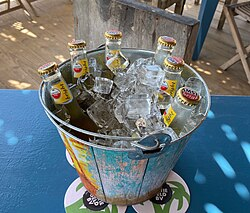
Beer bucket — 5 premium lager bottles (650 ml)Bucket of beer on ice.jpg by Atsme, CC BY-SA 4.0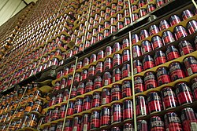
Beer bucket — 6 craft cans (330 ml)Beer cans.jpg by Shuntaro Kawasaki, CC0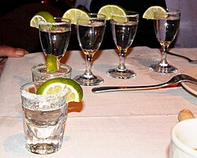
Blanco tequila, 100% agaveTequila shots.jpg by Prayitno / Thank you for (8 millions +) views from Los Angeles, USA, CC BY 2.0- Brut sparklingSparkling wine in a flute.jpg by Lachlan Hardy, CC BY 2.0
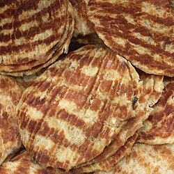
Burnt garlic butter fishGrilled fish fillet.jpg by François Nguyen, CC BY 2.0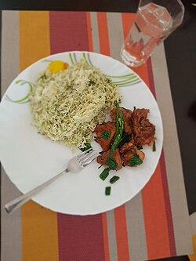
Burnt garlic fried riceChilli chicken, burnt garlic rice pk014.jpg by PallaviKhale, CC BY-SA 4.0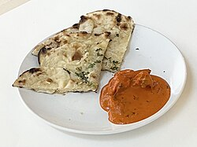
Butter chicken & garlic naanButter Chicken with Garlic Naan.jpg by Miscellaneous contributor, CC BY-SA 4.0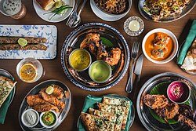
Butter naanNew Punjab Club food spread.jpg by Hongkongfoodlover123, CC BY-SA 4.0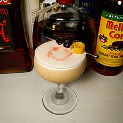
Chai-spiced Whisky SourWhiskey sour in coupe glass with garnishes.jpg by Ilikefood, CC BY-SA 4.0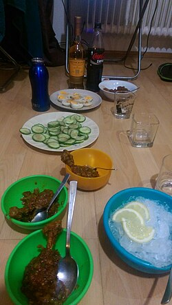
Chakna platterChakna.jpg by Mrudit161187, CC BY-SA 4.0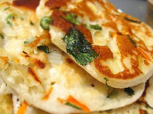
Cheese chilli kulchaKulcha, Indian stuffed bread.jpg by Jason Lam, CC BY-SA 2.0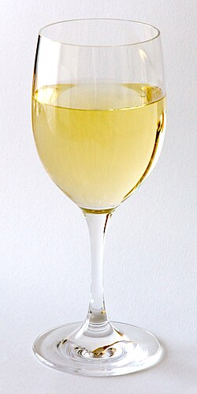
Chenin BlancWhite Wine Glas.jpg by André Karwath aka Aka, CC BY-SA 2.5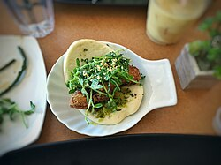
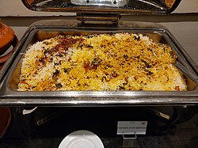
Chicken dum biryaniChicken Dum Biryani 03.jpg by Vis M, CC BY-SA 4.0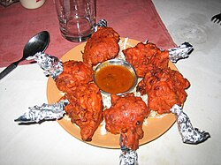
Chicken lollipopChicken lollipop in Goa.jpg by Peiling Tan from Singapore, Singapore, CC BY 2.0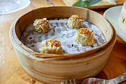
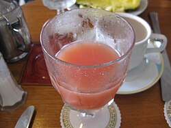
Chilli Guava ShooterGuava juice (3110765359).jpg by Eugene Peretz from Northampton, MA, USA, CC BY-SA 2.0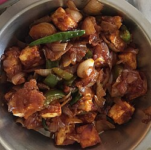
Chilli paneer, dryChilly Paneer 01.jpg by Marajozkee, CC BY-SA 4.0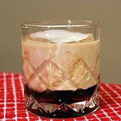
Coffee liqueurWhite Russian Cocktail.jpg by Will Shenton, CC BY-SA 3.0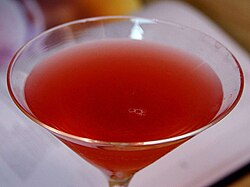
CosmopolitanCosmopolitan cocktail drink.jpg by Jon Sullivan, Public domain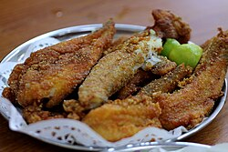
Crispy bombil fryFried Bombay Duck.JPG by Durvankur Patil, CC BY-SA 4.0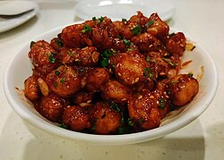
Crispy corn, Kalyani styleCrispy chilli baby corn.....jpg by Dikshita Bairagi, CC BY-SA 4.0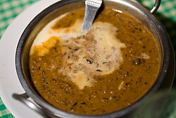
Dal NimbusDal Makhani.jpg by Charles Haynes, CC BY-SA 2.0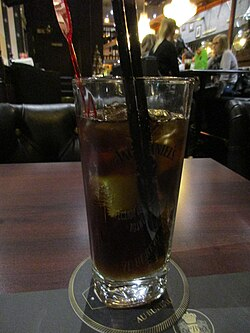
Dark rumCuba Libre 01.jpg by Arnaud 25, CC BY-SA 4.0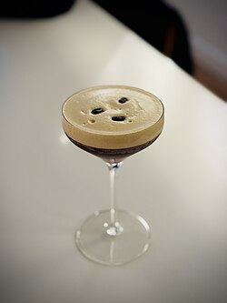
Espresso MartiniEspresso martini - November 2024 - Sarah Stierch.jpg by Missvain, CC0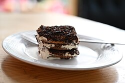
Filter-coffee tiramisuTiramisu dessert.jpg by Navneet Sharma, CC BY-SA 4.0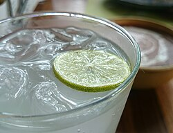
Fresh lime sodaFresh Lime.JPG by Siddhantsahni28, CC BY-SA 4.0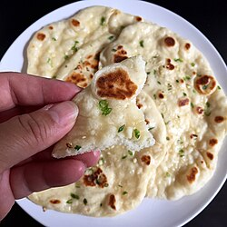
Garlic naanGarlic naan 1.jpg by Joy, CC BY 2.0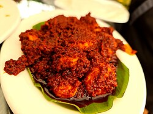
Ghee roast prawnsPrawns ghee roast from Coast 2 Coast in Brigade Road.jpg by Abyventura, CC BY-SA 4.0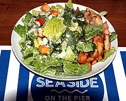
Grilled chicken CaesarCaesar Salad & Grilled Chicken (30548011308).jpg by Prayitno / Thank you for (12 millions +) view from Los Angeles, USA, CC BY 2.0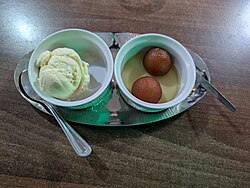
Gulab jamun with vanilla ice creamGulab Jamun with Ice Cream - Worthing Indian Cafe & Bar 2026-04-27.jpg by Andy Li, CC0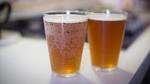
Hazy wheat, on tapBeertaccini's lablanche 2014 - IMG 0424 (14346781869).jpg by N i c o l a from Fiumicino (Rome), Italy, CC BY 2.0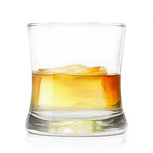
House blended whiskyA Glass of Whiskey on the Rocks.jpg by Benjamin Thompson, CC BY 3.0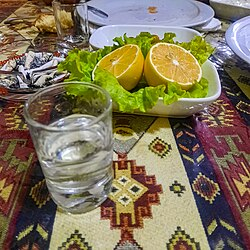
House vodkaVodka glass in Baku, Azerbaijan.jpg by Aykhan Zayedzadeh, CC BY 4.0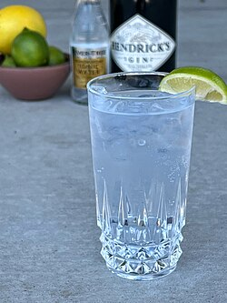
Indian craft ginGin and tonic cocktail with wedge of lime.jpg by Davidnuescheler, CC BY-SA 4.0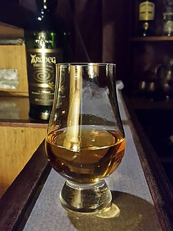
Indian single maltGlencairn Whisky Glass...jpg by Amiko82, CC BY-SA 4.0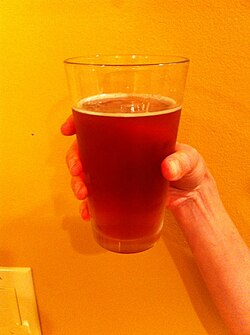
IPA, on tapIPA in a pint glass in a hand.jpeg by User:misterkong, CC BY-SA 3.0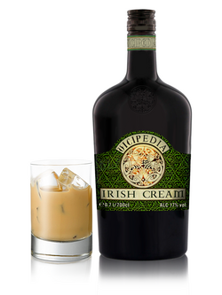
Irish cream liqueurWikipedia Irish Cream glass.png by Bruce The Deus, CC BY-SA 4.0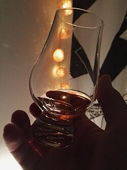
Islay single malt, peatedGlencairn whisky glass and lights.jpg by Trogain, CC BY-SA 4.0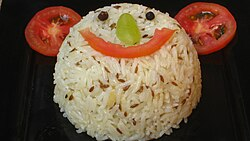
Jeera riceJeera-rice.JPG by Sonia Goyal, CC BY-SA 2.0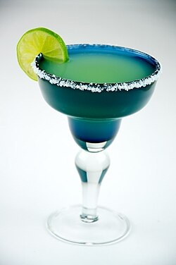
Kala Khatta MargaritaMargarita with lime in a margarita glass - Evan Swigart.jpg by Evan Swigart from Chicago, USA, CC BY 2.0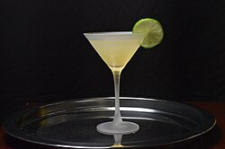
KamikazeKamikaze-cocktail.jpg by Bevvy, CC BY-SA 3.0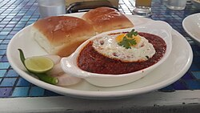
Keema pav slidersKheema Pav.jpg by Dr. Vinay Satish Parmar, CC BY-SA 4.0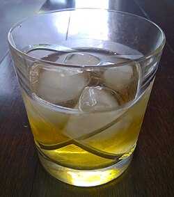
Kentucky straight bourbonGlass of Scotch and soda.jpg by DoubleGrazing, CC BY-SA 4.0 Kokum FizzKokum or Punarpuli sharbat.jpg by Prajna Prabhu, CC BY-SA 4.0
Kokum FizzKokum or Punarpuli sharbat.jpg by Prajna Prabhu, CC BY-SA 4.0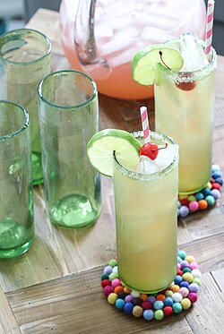
Kokum Mojito pitcherCherry beer margaritas in a glass with straws and pitcher on a table (18492331420).jpg by Personal Creations, CC BY 2.0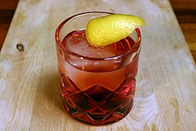
Kokum NegroniNegroni on the Rocks.jpg by Will Shenton, CC BY-SA 3.0- Kolhapuri mutton & bhakriMutton Curry 2.jpg by Gaurav Dhwaj Khadka, CC BY-SA 4.0
- Kulfi faloodaFalooda kulfi from India.jpg by Aashita Kawatra, CC BY-SA 4.0
- Laccha parathaLaccha Paratha.JPG by Durvankur Patil, CC BY-SA 4.0
- Lamb seekh platterSeekh Kebab.JPG by raasiel, CC BY 2.0
- Lemon coriander chicken soupBowl of chicken soup.jpg by RWS, CC BY-SA 3.0
- Lemon DropLemon Drop Martini.jpg by The Dana Files from Plover, WI, United States, CC BY 2.0
- Loaded nachosThe Beanery Nachos.jpg by Navajcmer, CC BY-SA 4.0
- London dry ginGin and Tonic with ingredients.jpg by NotFromUtrecht, CC BY-SA 3.0
- Long Island Iced TeaLong Island Iced Tea with Lemon and Straw.jpg by Alisdair McDiarmid from Glasgow, United Kingdom, CC BY 2.0
- Long Island Iced Tea pitcherPitcher and glass of iced tea - Evan Swigart.jpg by Evan Swigart from Chicago, USA, CC BY 2.0
- Malvani fish curry & ricePomplet Fry Thali.jpg by Amitkumar Si, CC BY-SA 4.0
- Masala papadMasala Papad , The Ocean Pearl Hotel.jpg by Yakshitha, CC BY-SA 4.0
- Masala peanutsSpicy peanut1.jpg by Rocky231293, CC BY-SA 4.0
- MezcalMezcal flight from Suerte.jpg by Cerebral726, CC BY-SA 4.0
- MojitoMojito, Mazatlán, 30 de noviembre de 2022.jpg by El Nuevo Doge, CC0
- Monsoon MuleMoscow Mule.jpg by edseloh, CC BY-SA 2.0
- Murgh malai tikkaMurgh Malai Kabab (Tikka).JPG by Miansari66, CC0
- Mushroom galouti on sheermalGalouti Kebab.jpg by Visheshvik, CC BY-SA 4.0
- Mutton dum biryaniMutton Dum Biryani layering.jpg by Truptii Gaikwad, CC BY-SA 4.0
- Nimbus SpritzSpritz rosso e bianco.JPG by DracoRoboter at Italian Wikipedia, CC BY-SA 3.0
- Pale ale, on tapIndia Pale Ale picture from Jacksonville, FL.jpg by ZLGragg19, CC BY-SA 3.0
- Paneer tikka, three waysPanir Tikka Indian cheese grilled.jpg by Sonja Pauen -Stanhopea, CC BY 2.0 de
 Peri-peri friesFries (Peri Peri) 2026.jpg by Gpkp, CC BY-SA 4.0
Peri-peri friesFries (Peri Peri) 2026.jpg by Gpkp, CC BY-SA 4.0- Premium blended scotchScotch whisky in Aino Aalto glass.jpg by JIP, CC BY-SA 4.0
- Premium lager, bottle (650 ml)Beer bottles 2018 G1.jpg by George Chernilevsky, Public domain
- Rasmalai tres lechesRasmalai 3.jpg by Harpreet 712, CC BY-SA 4.0
- Reposado tequilaCaballito con tequila Tierra Mexicana.jpg by Tierra Mexicana, CC BY-SA 4.0
- Sangria pitcherRed Wine Sangria with lemon, lime, apple, and orange served in a glass - Evan Swigart.jpg by Evan Swigart from Chicago, USA, CC BY 2.0
- Sauvignon BlancGlass of White Wine shot with a bottle of white wine - Evan Swigart.jpg by Evan Swigart from Chicago, USA, CC BY 2.0
- ShirazRed Wine Glass.jpg by André Karwath aka Aka, CC BY-SA 3.0
 Sizzling brownieSizzling brownie (2065099914).jpg by Sankarshan Mukhopadhyay from Pune, India, CC BY-SA 2.0
Sizzling brownieSizzling brownie (2065099914).jpg by Sankarshan Mukhopadhyay from Pune, India, CC BY-SA 2.0- Smoked Old FashionedSmoked Old Fashioned, Restaurant R'Evolution, the French Quarter, New Orleans, Louisiana.jpg by Cory Doctorow, CC BY-SA 2.0
- Speyside single malt, 12 yrsWhisky (5561103311).jpg by cyclonebill from Copenhagen, Denmark, CC BY-SA 2.0
- Stout, on tapA glass of Stout from Cloudwater.jpg by 55belgianbeerfan, CC0
- Strong lager, bottle (650 ml)Glass beer mug full.jpg by AxtImHause, CC BY 4.0
- Subz dum biryaniVegetable Biryani IMG 001.jpg by Phadke09, CC BY-SA 4.0
- Tandoori broccoliCerulean Restaurant - 2015-10-15 - Edsel Little 01.jpg by Edsel Little, CC BY-SA 2.0
- Tandoori chickenTandoori chicken Indian.jpg by pelican, CC BY-SA 2.0
- Tandoori mushroomMushroom tikkā at Kitchen of Awadh, DLF Phase 4, Gurgaon (2025-09-28).jpg by Contrapunctus-1, CC BY-SA 4.0
- Tandoori rotiTandoori Roti in clay oven.JPG by Kamalsahansi, CC BY-SA 4.0
- Tequila SlammerTequila Flag Style (17151507190).jpg by cogdogblog, CC BY 2.0
- Tomato dhaniya shorbaTomato soup.jpg by Unknown author, CC BY-SA 2.0
- Tonic water or ginger aleLime tonic water.jpg by Corn cheese, CC BY-SA 4.0
- Truffle mushroom risottoMushroom risotto (3990739885).jpg by Karen and Brad Emerson, CC BY 2.0
- Veg crystal dim sumHar gow (27871753892).jpg by T.Tseng, CC BY 2.0
- Veg Hakka noodlesHakka Noodles, Veg Manchurian PK009.jpg by PallaviKhale, CC BY-SA 4.0
- Virgin Guava MaryBloody Mary Coctail with celery stalk - Evan Swigart.jpg by Evan Swigart from Chicago, USA, CC BY 2.0
- Virgin MojitoVirgin Mojito 01.jpg by Pratishkhedekar, CC BY-SA 4.0
- Watermelon, feta & mint saladWatermelon & Feta Salad.jpg by Shoshanah, CC BY 2.0
- Whisky SourFree whisky sour at Dubrovnik.jpg by JIP, CC BY-SA 4.0
- White rumTwo shot glasses.jpg by Doug butler, CC BY-SA 4.0
- Zinfandel roséRose Wine Glass.jpg by E. Dronkert, CC BY 2.0


.jpg){kind=link}


_POLLO_-_Chicken,_scallion,_cloud_ear_mushroom,_aj%C3%AD_amarillo.jpg){kind=link}
.jpg){kind=link}


.jpg){kind=link}

.jpg){kind=link}


.jpg){kind=link}


.JPG){kind=link}


_2026.jpg){kind=link}


.jpg){kind=link}

.jpg){kind=link}


.jpg){kind=link}

.jpg){kind=link}


.jpg){kind=link}
.jpg){kind=link}